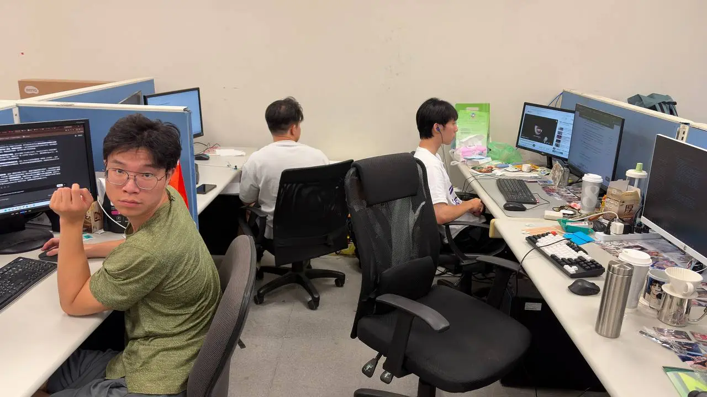
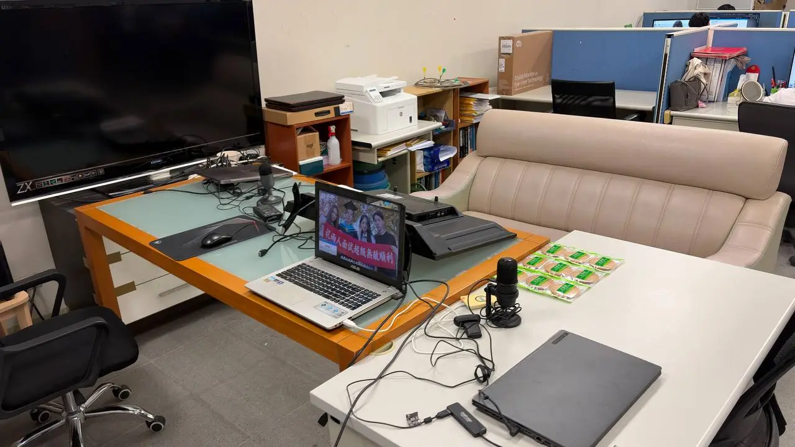
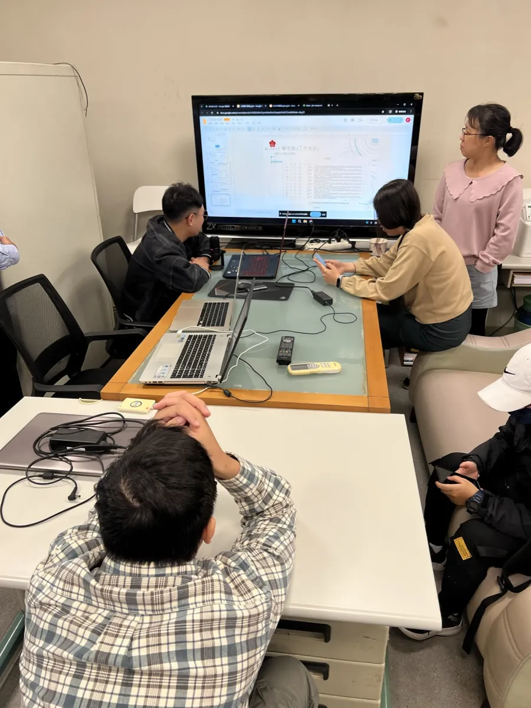

0
實驗室成員
0
博士生
0
碩士生
About the Lab
歡迎來到 USCC Lab
本實驗室致力於人工智慧（AI）技術之研發與應用，專注於將機器學習與深度學習技術落實於實際場域。
近年來，實驗室積極投入 AI 計畫開發，並與業界公司合作推動產學合作計畫，包含 行動應用程式（App）開發、資料分析平台設計，強調技術落地與產業實務接軌， 提升學生實作能力與產業競爭力。
歡迎有程式設計專長的同學加入我們，也歡迎有興趣、肯吃苦的同學一起探索深度學習應用的領域！

Research Focus
研究方向
🧠
人工智慧 & 深度學習
機器學習與深度學習模型之研發，從演算法設計到實際場域部署。
📡
塵間感知
無線通訊、行動計算與感測技術，建構無所不在的智慧感知系統。
☁️
雲端計算 & 平台
資料分析平台與雲端服務設計，支撐大規模 AI 應用落地。
Gallery
實驗室剪影









Analytics
訪客造訪次數
Visitor Count · Real-time Tracking